Prep it. Scale it. Race it.
Twenty-plus years building and tuning 602 crate modifieds for racers across the Northeast. Car prep, coaching, and race-night support — so you can focus on the wheel.
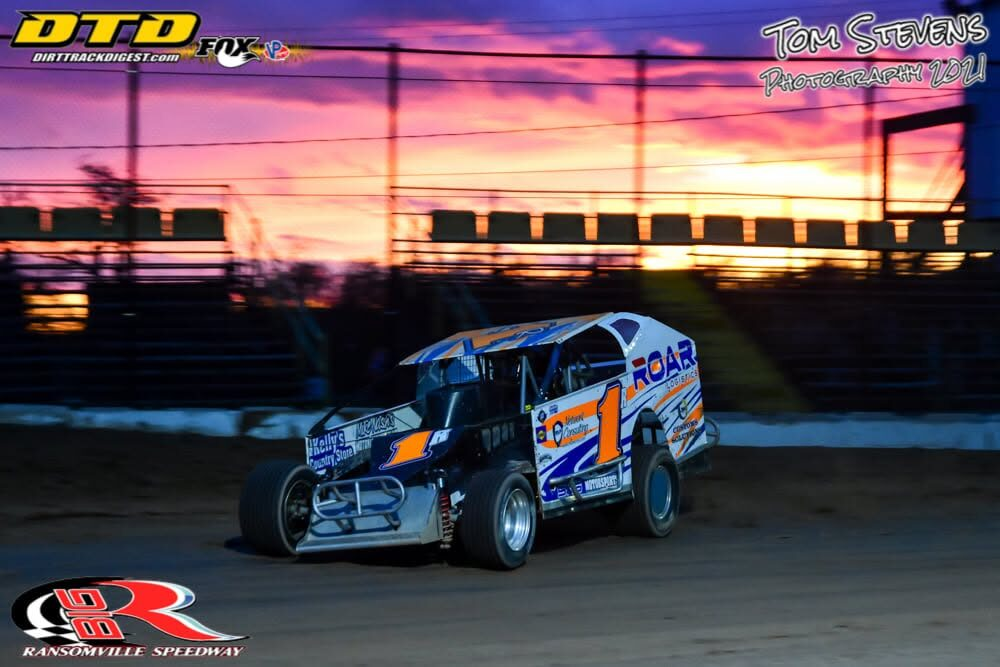
From short-track Saturday nights to championship setups, I've spent my career in the Northeast Modified world — most of it focused on the 602 crate class, where setup wins races more often than horsepower does.
What I do
Three ways I help racers get more out of their car and their night.
Car prep & setup
Your car built and tuned to run right — not just pass tech. I work through chassis setup, shock packages, and 602 rules compliance so you roll off the trailer ready.
- Chassis and corner-weight setup
- Shock selection and packages for your track
- 602 crate rules compliance and tech prep
- Pre-season and mid-season tune-ups
Coaching & driver development
Speed is a skill. I work with drivers on reading the racetrack, car control, and race craft — in the seat and on film.
- Track walk-throughs and line work
- In-car and race film review
- Race craft: restarts, traffic, closing laps
- Season-long development for up-and-coming drivers
Race-day support
Trackside help from hauler to checkered flag, adjusting as the track and the night change.
- MorningTech & setup check
- PracticeHot laps, baseline reads
- HeatsIn-race adjustments
- FeatureFinal setup call
- AfterDebrief & notes for next week
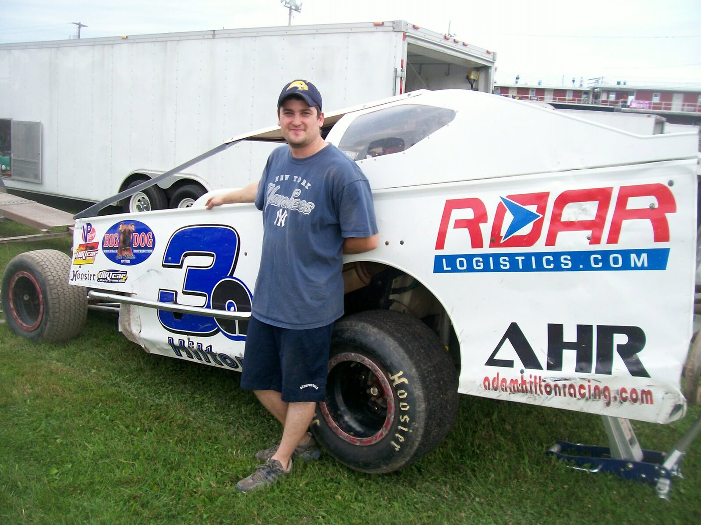
Built in the shop. Proven on the track.
Before he ever strapped into a car of his own, Adam Hilton was turning wrenches on his dad Fran's team — a fixture at Outlaw Speedway for two decades, running the same #3A. Adam got his own start in go-karts at 15, then spent 2010 through 2023 racing Sportsman and Modifieds around the Northeast — running Modifieds from 2017 through 2021 before moving into Sportsman 602 crate cars, where he's raced ever since.
Whether you're building your first crate car or trying to close the gap to the front row, the goal is the same — a car that does what you ask of it, and a driver who knows how to ask.
Track record
Twenty-plus years of Saturday nights, from local points races up to a track championship.
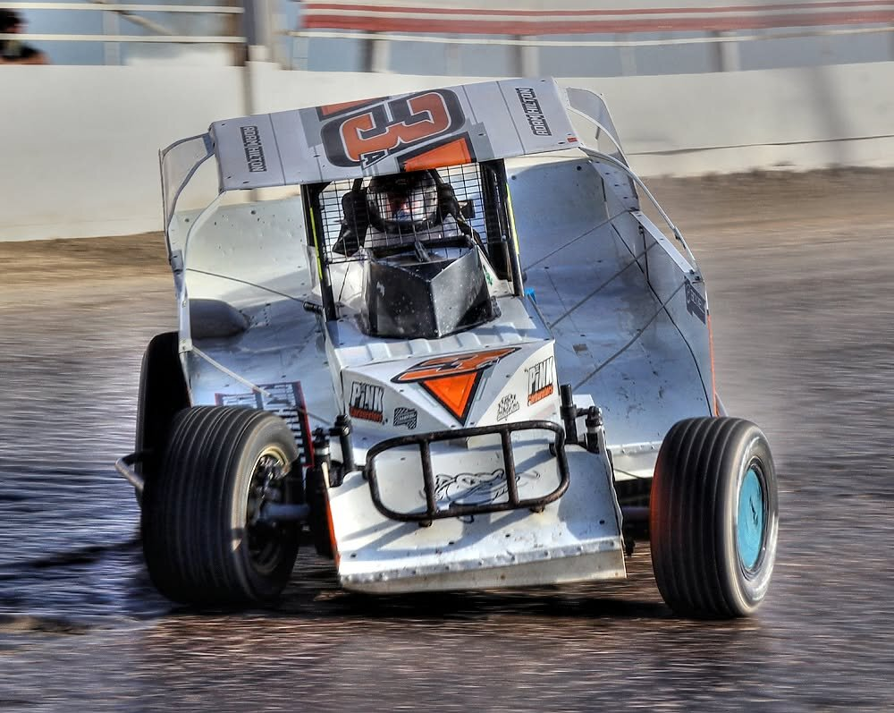
Genesee Speedway — Sportsman champion
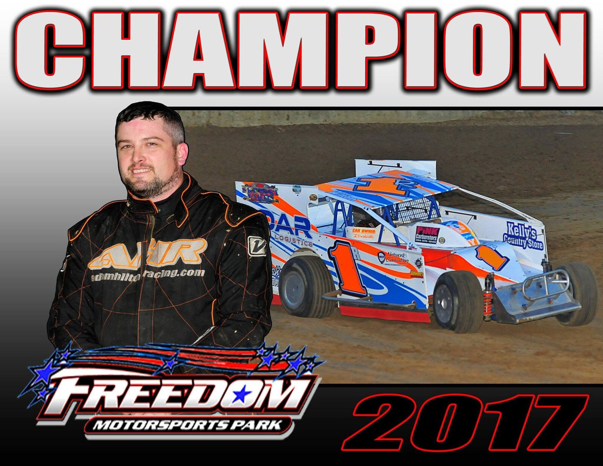
Tracks raced
- Weedsport Speedway · 1 win
- Canandaigua · 1 win
- Rolling Wheels Raceway · 1 win
- Ransomville
- Humberstone · 1 win
- Merrittville
- Thunder Mountain Speedway (NY) · 5 wins
- Skyline
- I-88 / Afton
- Syracuse
- Oswego
- Fulton
- Brockville
- Cornwall
- Autodrome Drummond
- Autodrome Granby
- Charlotte
- Freedom Motorsports Park · 2 wins
- Lernerville · 5 wins
- Raceway 7 · 1 win
- AMP
- Sharon · 2 wins
- Pittsburgh's PA Motor Speedway · 1 win
- Thunder Mountain Speedway (PA) · 1 win
- Tri-City · 1 win
- Outlaw Speedway · 3 wins
- Genesee · 5 wins
- Mercer
- Hummingbird
Year by year
- 201024 races, 6 top-5s, 12 top-10s — mostly at Rolling Wheels Raceway and Weedsport Speedway
- 201128 races, 9 top-5s, 18 top-10s; win at Canandaigua on September 3
- 201226 races, 5 top-5s, 16 top-10s; win at Humberstone on July 6
- 201331 races, 6 top-5s, 16 top-10s; win at Rolling Wheels Raceway leading all 30 laps in the DIRTcar Sportsman Modified Series
- 2014Led the Rush Sportsman Modified Series points into August with 4 wins on the year; finished 2nd
- 2015Ran the Rush Modified Series Bicknell Touring Series, finishing 2nd in points, with wins at Lernerville Speedway (season opener and a Tour win); also ran Thunder Mountain Speedway and Weedsport Speedway
- 2016Won at Weedsport Speedway, Thunder Mountain Speedway (PA), and — leading all 20 laps for his first win there — Tri-City Raceway, all in the Rush Modified Series; 6th in points at Weedsport Speedway
- 2017Freedom Motorsports Park Modified track champion
- 2018Ran Modified at Freedom Motorsports Park; runner-up to Billy Van Pelt in an Outlaw Modified feature there
- 2019Ran Outlaw Speedway Modified
- 2020Limited season — ran select races
- 20213rd in points at Outlaw Speedway (Sportsman/602 Crate), with 3 feature wins — including the Hoosier Tire Sportsman main on June 4; also ran Genesee Speedway part-time
- 2022Ran the BRP Modified Tour (best finish 7th, Hummingbird Speedway) and Genesee Speedway; hard charger at Sharon Speedway's Lou Blaney Memorial, coming from 16th to 7th
- 2023Genesee Speedway Sportsman champion
- 2024Most recent win, at Freedom Motorsports Park; also ran 3rd in the DIRTcar Sportsman Series West Region opener at Ransomville, battling Cody McPherson for the lead
From the track
A few nights that stuck.
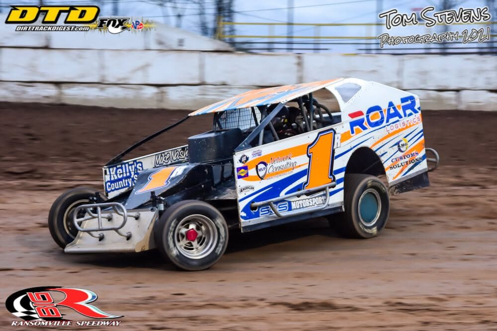
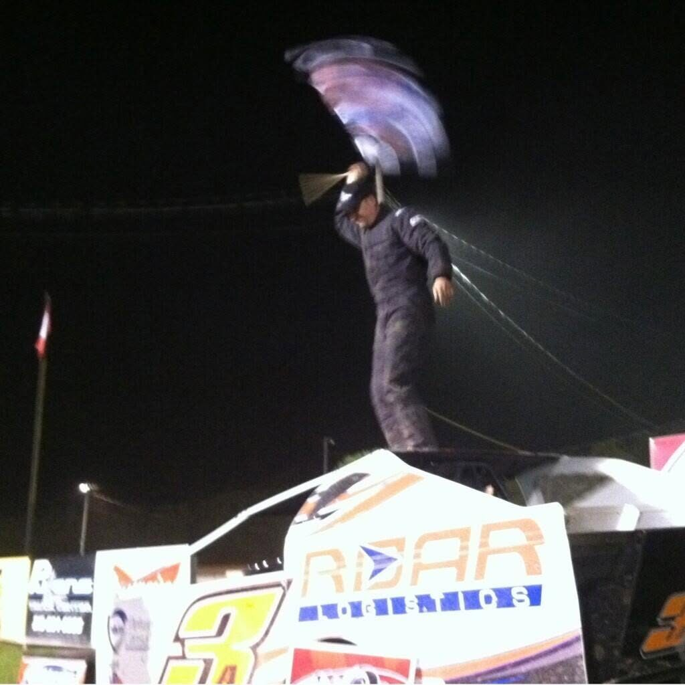
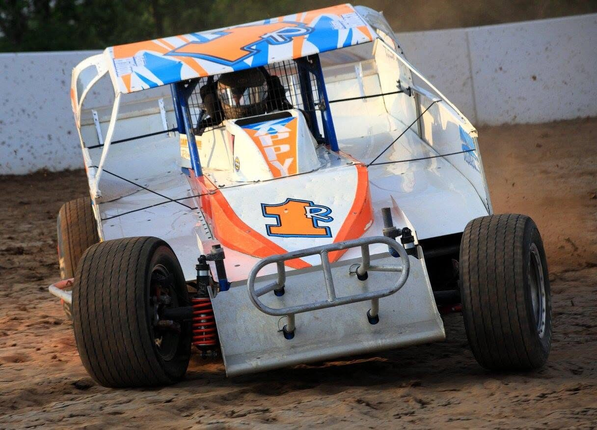
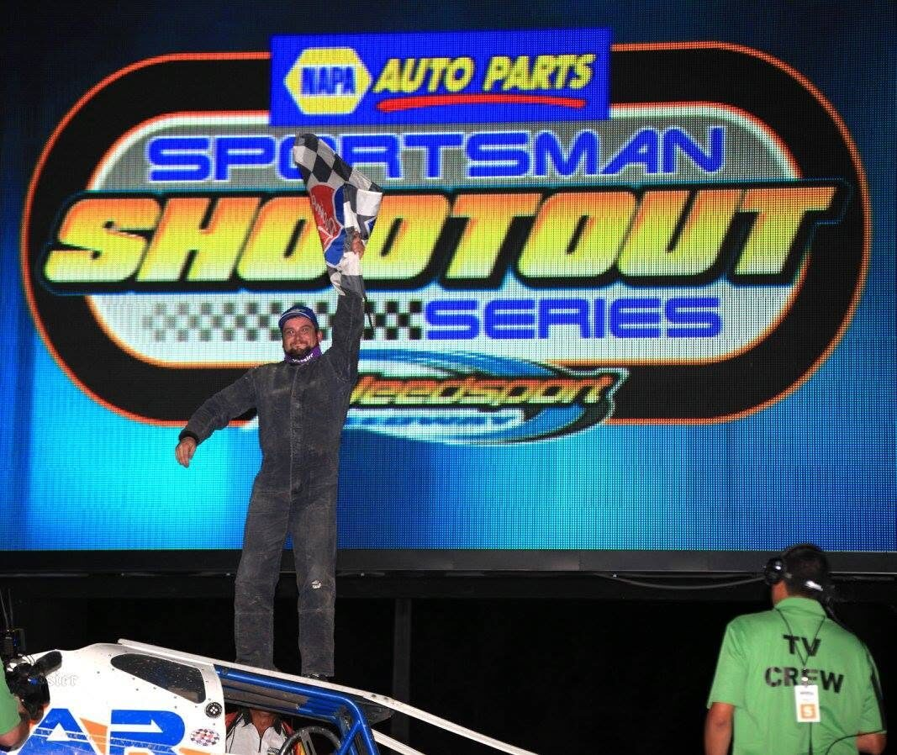
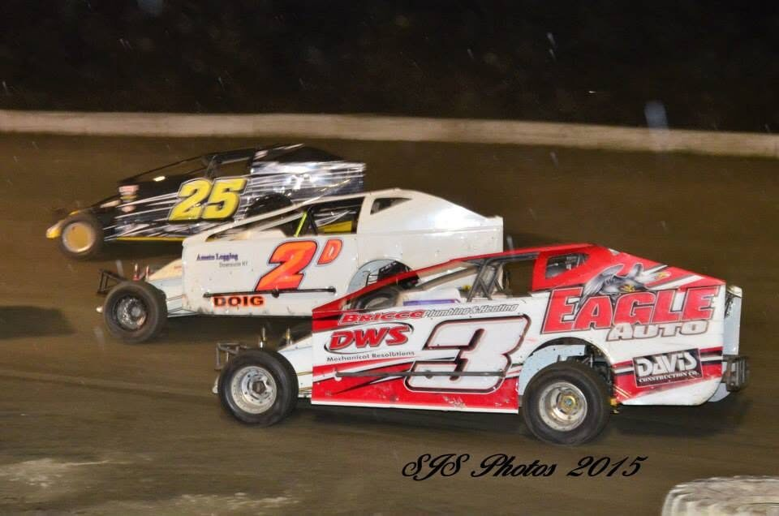
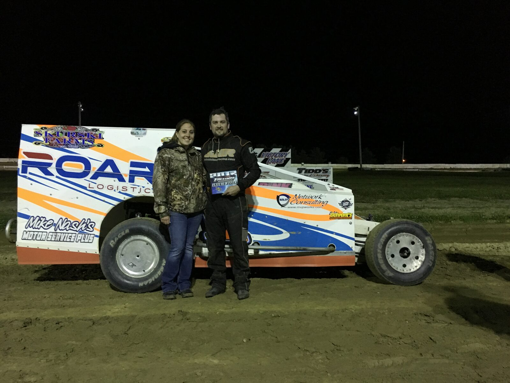
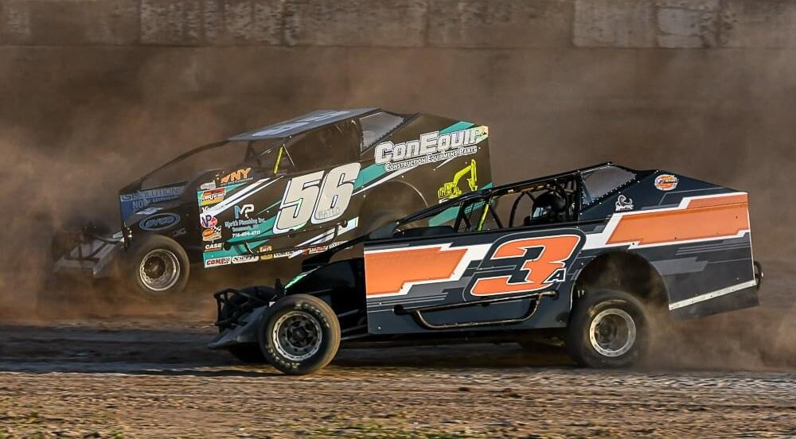
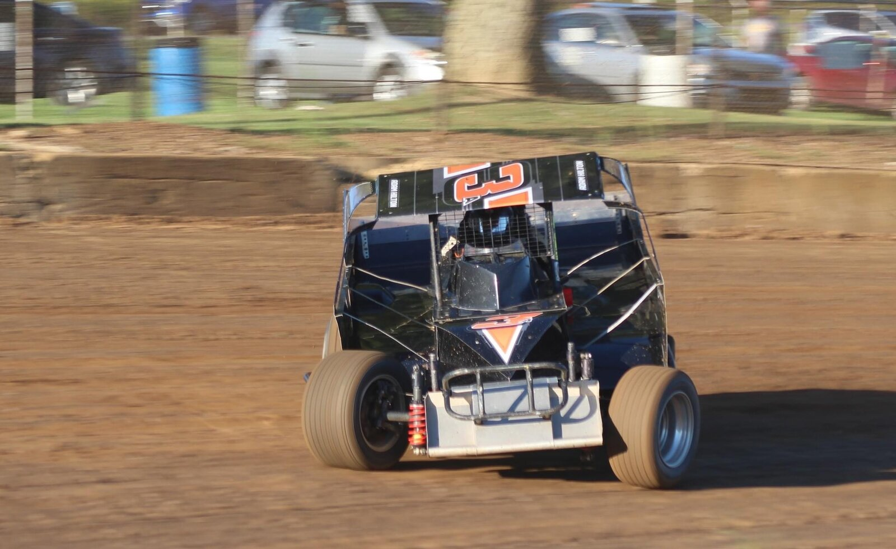
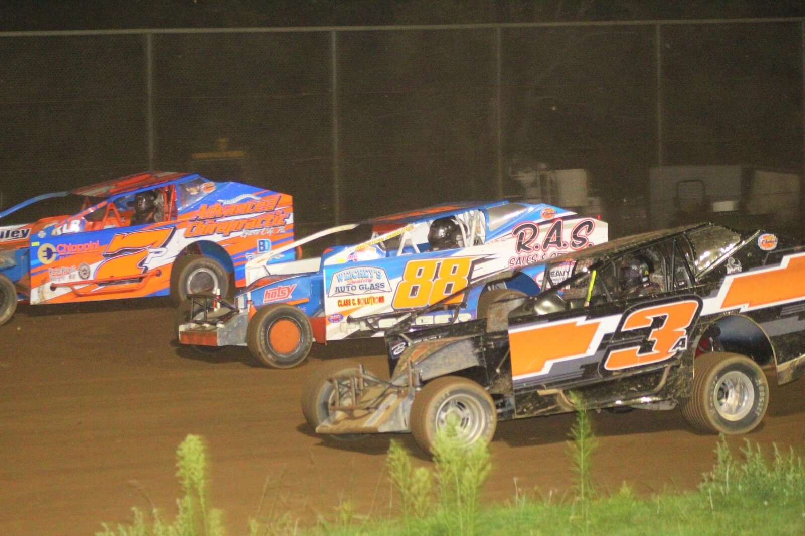
Let's talk about your car.
Tell me about your setup, your track, and what you're chasing this season. I'll follow up to figure out where I can help.
Prefer email?
adam@adamhiltonracing.com